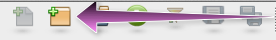
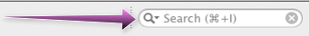

Welcome to the jMonkeyEngine SDK
You are running the latest preview version of the SDK (jMonkeyEngine SDK 3.1-alpha2)
This place will be updated with the latest news about the SDK, see below how you can check for incremental updates.
Getting Started
Press the “New Project button to create a new Project. Then create a “BasicGame project from the “jME3 category. Press the “New File button to create new java files, materials, scenes, fonts, models and other files.

Tutorials / Manual
By pressing “F1 you can open the manual which contains up to date tutorials, documentation and more to help you get started. You can search the manual contents via the search field up right.

Troubleshooting
If you experience problems or instability issues with the SDK, (partially outdated) : click here to see common troubleshooting tips.
For reporting issues on the SDK, see the following link : reporting issues for the sdk on github
If the issues is related to the jMonkeyEngine it self, see this link : issues tracker for the jMonkeyEngine